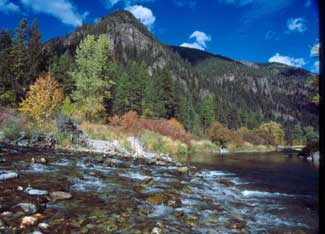

Ernest Cook has more than 25 years of experience working with the Trust for Public Land. Read this interview to learn all about conservation easements from a professional. For more, see “Protect Your Land for Future Generations.”
Let’s say I’m a landowner who would like to preserve my land for future generations. Explain the process of approaching a land trust, setting up a conservation easement and enforcing its restrictions permanently under new owners.
Land trusts are nonprofit organizations that work to preserve open land, and they have a variety of tools to make that possible. In particular, land trusts often work with landowners to arrange a contribution of a conservation easement from a landowner to the land trust. So that’s one avenue a landowner can look at. Some landowners also will donate land outright to a land trust. So rather than giving a conservation easement, which I will go into some more detail in a minute, they also can donate their entire ownership of the land to the land trust, so that ownership of the tract or the parcel passes to the nonprofit organization. In some cases, land trusts may have some funding - or they may know where funding exists - that can compensate a landowner in whole or in part for the value of the land that is being protected.
A conservation easement is a technical term that refers to a legal instrument that’s recorded at the registry of deeds against a property, which in its most basic form prohibits any future development of the property. However, easements are almost endlessly negotiable. For example, the easement instrument may specify that one additional home site can be built on the property. Maybe it’s 100 acres that might ordinarily allow for 10 dwellings to be developed, but the conservation easement could limit it to just one home site on the area, or it could limit it to none. Again, those are flexible. The easement often has provisions about how the land should be managed in its open space condition. So for example, if there is an important wildlife habitat on the property, the easement may contain some very specific requirements that govern how the property is to be used in the future so that the wildlife value of the property is not destroyed. For example, if this is a wetland, the easement may prohibit any drainage that would dry up the wetland; or if it’s a forest habitat, it may prohibit any logging operations; or it may regulate how farmland or ranchland is used in a way that will be compatible with wildlife. Again, easements should be carefully tailored to help both the landowner and the land trust to meet their conservation goals for the property.
If a landowner donates the easement to the land trust and the easement meets certain requirements, the easement donation will typically enable the landowner to take a charitable tax deduction, the gift of the easement, and that can be a very powerful incentive for landowners. Particularly if the landowner really wants to see land protected, they can achieve that with a conservation easement and in a sense be partly compensated by savings on income taxes - assuming the owner pays income taxes. This doesn’t work so well if the owner of the property is a church, or a chapter of the Boy Scouts or any other kind of nonprofit organization that doesn’t pay taxes.
When you say that easements are endlessly negotiable, do you mean when they are initially created? Because once they’re established, future owners cannot change the restrictions. Correct?
It’s certainly the case that the negotiations should take place when the easements are created. But if the same owner or a future owner of the property wants to change the conditions, in some cases that can be negotiated with the holder of the easement. Whoever holds the easement would have to agree to it. And that’s not all that uncommon, because often the easement may allow certain things and prevent certain things and may not even anticipate some activity that could happen on the property that comes up 50 years from now. For example, if a conservation easement had been granted 200 years ago, it most likely would not have anticipated the possibility that power lines could cross the property. So it may or may not allow or prohibit such a thing, and that would have to be negotiated with whoever holds the easement at the current time.
One of the big selling points is that a conservation easement is permanent and that the landowner’s conservation vision will be permanently enforced by the land trust. Are there exceptions?
There are exceptions. I would say modifications - but nothing that would undo the landowner’s intent to protect a property in perpetuity. As a matter of fact, there are certain requirements for a conservation easement to give rise to a charitable contribution and a tax deduction, and one of them is that the easement does have to be in perpetuity. It cannot be for 20 years. It has to run forever, and so it has to give a guarantee that there is a permanent conservation benefit and a permanent public benefit that arises from it.
How easy is it to set up an easement if I’m a landowner and approach a land trust or a government agency? Is it a long process?
Well, in some cases there can be a very standardized easement with a set of restrictions that dozens of farmers in a given county have agreed to. So a land trust or a county government may say, “Look, this is the package we offer, sign on the dotted line.” So it doesn’t have to be really complicated. If another 60 acres of farmland could go into the program, it’s a pretty standard package. But if the property is unusual in its terrain, in its use and permitted uses that the landowner wants to continue, or some additional construction might happen on the property, then it can get into some very complex considerations.
Also, for a complex property it’s important to do a baseline survey, which is really to document the current condition of the property, knowing where there is field, where there is forest, knowing what the topography is. This can include aerial photographs. It can include timber studies that evaluate the condition of the forest on the property. It can involve understanding the hydrology of the site (where streams are running) as well as understanding the ecology of the site where individual species and plants may be growing. So all those things can be documented in an extensive baseline inventory, and then all of those conditions may be specifically described. You can’t disturb the topography, you can’t cut any mature trees or any trees at all, you can’t disrupt the flow of water or block it in any way with a dam or something like that. Again, with a complex property containing many features, there can be a lot to describe and a lot to negotiate. Whereas if it’s a 60-acre piece of flat farmland that grows corn or soybeans generally, it’s just not going to be very difficult to figure out what values you are trying to protect in that case. You can use more of a cookie cutter approach.
Are there any general size requirements, or is it more about public benefit?
It’s public benefit. I once worked with an attorney in designing an easement program for very, very small lots that were 20 feet wide by 30 feet deep. That was sort of interesting. The key is that there has to be a public value to it.
Are most landowners who apply for an easement granted one, or is it fairly hard to qualify?
No. If there is some public value that can be met in protecting the property, then it’s not particularly hard to qualify. However, it may be that there is no land trust or government agency that is particularly interested in holding an easement in that landowner’s area. There are hundreds of land trusts, with more and more being set up every year. But they don’t cover the whole country yet, let’s put it that way. So there can be significant parts of the country where there is no land trust now working that has the capacity to accept and monitor an easement. And government agencies are not always willing to accept easements because they do imply a certain management burden over the long term, and if the government is not actively seeking to extend protection to a certain area, then it won’t take an easement in that area.
Also, there are times when a land trust will require a landowner to contribute some cash along with the easement because holding the easement does create a perpetual obligation on the part of the land trust. The land trust has to monitor the property on a regular basis to make sure that the easement is not being violated, and if the easement is violated - and a small percentage of easements are violated - then the land trust needs to start an enforcement action. That can start with a nice letter informing the owner that there appears to be a violation, and it can end up in a lawsuit. That can be very expensive. It’s a rare case that it goes to that level, but every organization that holds easements needs to think about enforcement and to make sure that it has the capacity, either through its fundraising or through contributions from landowners, that go into a special fund, to make sure it has the capacity to follow up and take appropriate enforcement action.
Now if a landowner is giving land outright, not giving an easement, but just giving the deed to the property, lock stock and barrel, to a land trust, you’re not likely to have as much room for differing judgments about what could be permitted 10 or 50 years from now. So you don’t have the complex enforcement issue. If the land trust owns property outright, it can say, “Well, this is my property. You can’t set foot or do anything on it.” Easements are more likely to be subject to potential enforcement problems.
Does the landowner have much flexibility in the agreement, or is it more tailored to the land trust’s interests?
Again, there has to be a public purpose test satisfied. Beyond that, the easement agreement can be your cookie cutter farmland easement, and there’s not going to be much flexibility there. With the more complex agreements, a landowner can give up a few rights or the landowner can give up a lot of rights - and anywhere in between. Depending how many rights a landowner gives up, the value of the easement, and the tax deduction that the landowner can take, is going to shift.
The amount of the gift is determined by taking the “after” value of the property (what the property is worth after the easement is in place) then subtracting that from the “before” value of the property (what the property is worth before the easement is granted). So an appraiser needs to determine the value of the property in its current condition and what it will be worth after the easement has been imposed. If the easement makes only modest restrictions on the use of the property, then the “after” value may be as much as 80 percent of the “before” value. But if the easement makes very thoroughgoing restrictions on the use of the property and no development at all is permitted, and it’s in an area where there’s a lot of development pressure, those development rights that are given away are of big, big value. Well, then the value of the tax deduction is going to be very significant. It could be 80 or 90 percent of the total “before” value of the property.
I understand that a piece of land must have some sort of public benefit to qualify.
Yes. To quality the owner for a tax deduction, there has to be a public benefit. The public benefits are laid out in a section of the Internal Revenue Code.
What about to even qualify for an easement period? I understand that there needs to be public benefit to even receive an easement, whether for open space, scenic value, etc.
No, not really. Let’s put it this way. A land trust is, in every case I know of, going to be a public charity, what’s called a 501 (c)(3) public charity organization. That again refers to a section of the Internal Revenue Code. Contributions to a public charity are tax deductible to the maximum extent permitted by law. So the land trust should not be in the business of accepting any gifts that don’t have a public purpose. But technically, two private land owners, neither of whom has a public purpose required by law, could agree to exchange conservation easements. What if, for example, one owner has a house on 50 acres of land and could build some more but would just as soon keep it open, and a neighbor has a house on another 50 acres of land and again could sell off some lots. But the two owners get to talking, and they say, “Well you know, if you don’t develop your land, I won’t develop my land.” They could memorialize that in an agreement where each gives to the other essentially a conservation easement, and they sign a document that prohibits development on their property because they each see some benefit for themselves. If Amy grants Joan an easement that precludes development on Amy’s land, then Joan is happy to give Amy an easement that prevents development on Joan’s land likewise. There would be no public purpose there in particular, but it would still be a legally binding easement that could run in perpetuity and forever prevent development of both properties.
Once the landowners have passed away, how is that agreement enforced?
Well, Amy would enforce the agreement against whoever bought Joan’s property, and Joan would enforce the agreement against whoever bought Amy’s property. Enforcement works the same way as a conservation easement is enforced. A conservation easement is just a particular situation where the owner of the property gives the easement to a public charity and the easement meets the public purposes rule that’s spelled out by the Internal Revenue Code. Then and only then can it give rise to this tax benefit. But the enforceability of an easement is not a matter of the Internal Revenue Code. That’s a matter of property law - that is, common law. Most basic property rights derive from common law in this country.
What are the factors of public benefit qualifications through the IRS?
The Land Trust Alliance provides tax policy information. There’s just a little section of the tax code that lists what they are. It has to carryout some kind of public purpose, and so it’s not an extremely difficult test to meet. You can show, for example, that there is some kind of public open space value. Perhaps there is some government master plan for the county suggesting that protecting as much open land as possible in this part of the county is important because it’s a sensitive watershed - so then you could meet the public purpose test that way. Or if you could show that there was habitat for a species that was mentioned in the state wildlife action plan as a species whose protected habitat needs to be increased in the state, then you could point to that.
Would the tax benefit be the main advantage of using a nonprofit land trust rather than doing a private agreement or going through a government agency?
No. Tax benefits are the same for a government agency as they are for a land trust.
A landowner also can give an easement to a government agency, and it gives rise to the same tax benefits. Again, a land trust is given sort of a public status because it’s acting in the public benefit, so governments offer all the same tax benefits for sure. Now there is just the fact that many landowners would rather not work directly with a public agency because they may be discussing matters about their income taxes, for example, that they would just as soon not have in government records. Dealing with a land trust, it’s often more of a sense of confidentiality and negotiation. But that said, there are many, many government agencies that are accepting gifts of conservation easements, and there are - I don’t know how many, we haven’t been able to do a census of all of them - but hundreds and hundreds of government agencies that also purchase conservation easements from landowners. If you look at New Jersey, for example, I think every one of the 21 counties - well, maybe not the most urban counties, but most of the county governments, probably the vast majority, maybe 18 of them - have programs that purchase conservation easements from farmers in the state, and many of the towns and the municipalities in New Jersey purchase conservations easements from farmers in the state, and the state government itself purchases conservation easements. So there is a very, very active program at all levels of government in New Jersey trying to protect the Garden State’s remaining private farmland. In some cases, landowners will donate easements as well to those agencies. It’s not restricted to land trusts at all.
Do you think one avenue is better than the other?
Nope. Often land trusts and government agencies work together. So you can contact one and they may say that it’s better to contact the other in your situation. A government agency may say, “Look, we are focusing on trying to protect this particular area and your land is outside,” so they’ll contact a land trust or vice versa. Generally land trusts are very aware of government programs and government conservation programs are very aware of land trusts that operate in their areas, and often they’ll work in partnership somehow.
Can you estimate the cost of setting one up or does is depend too much on different financial advisor fees or attorney fees?
It really depends. Sometimes a baseline conditions assessment itself can be quite expensive, tens of thousands of dollars. Having a survey done of the boundaries of the property may be necessary in some cases so that you know exactly which land is subject to the easement and which land is not, and surveys can be extremely expensive especially if they’re on irregular terrain or if the land records are not typically clear. But if you go to the Midwest where all the land is sliced up into tracts of 40 and 80 acres, and you’re dealing with an easement simply to protect cropland from being developed, the cost can be very low.
Why is a conservation easement a valuable tool?
Because it does offer flexibility and because it offers tax benefits to landowners. It allows an owner continued use of the property, continued traditional use, and that may be exactly what the landowner wants to continue: the traditional use of the property that includes substantial open space. By and large, a land trust is a private sector tool that a landowner can consider, but if it doesn’t make sense, back out of.
What do you mean by a private sector tool?
It can be accomplished through discussions with two private parties: a landowner and a land trust. You don’t have to get involved in a complex public approval process. So it can be a simple and comfortable thing to do.
For more expert insight, see Learn More About Land Conservation.
|
 RANDY BEACHAM The Thompson and Fisher river valleys of northwest Montana are protected by a conservation agreement between the Trust for Public Land, the Plum Creek Timber Company and the Montana Department of Fish, Wildlife and Parks. |
|
|